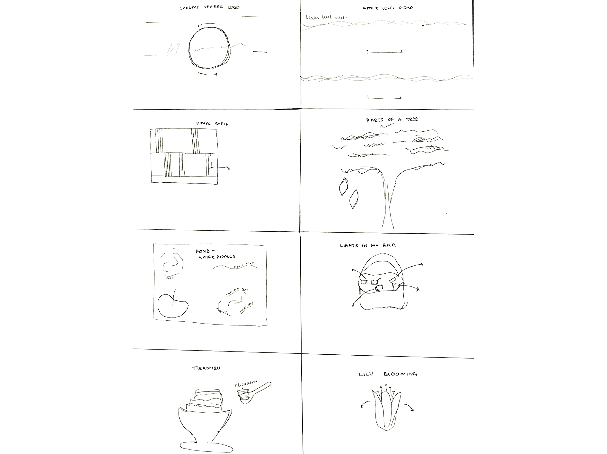
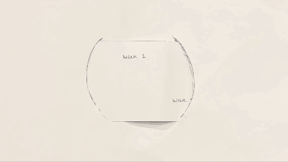

Designing for the Web
Web design involves creating visually appealing, user-friendly, and responsive websites. It includes considerations like typography, color schemes, layout and accessibility.
Sample Website Demo:

-Paper prototyping is a quick, low-cost way to sketch out ideas before digital design
-Crazy Eights is a rapid ideation technique where you fold a paper into eight sections and sketch eight different design ideas in eight minutes.
-Wireframes are more structured, hand-drawn sketches that map out layouts and interactions.
Crazy 8's:
Workbook Homepage Wireframe:
The logo is interactive and rotates in response to user manipulation
Web design involves creating visually appealing, user-friendly, and responsive websites. It includes considerations like typography, color schemes, layout and accessibility.
Sample Website Demo: